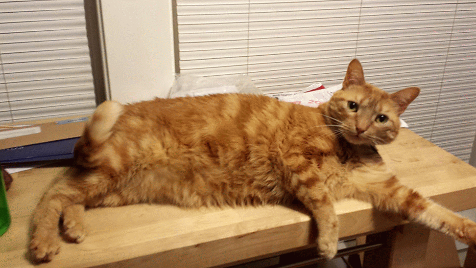

R for cats and cat lovers
An intro to R for new programmers
This is an introduction to R. I promise this will be fun. Since you have never used a programming language before, or any language for that matter, you won't be tainted by other programming languages with different ways of doing things. This is good - we can teach you the R way of doing things.

jsforcats?
Yep, this is a total rip off of JSforcats.com - hopefully Max doesn't mind.
List of things
- Using the R console - let's dig our claws in
- vectors - the basic R data structure
- data frames - weird but familiar
- lists
- indexing
- functions
- pipes
- Using packages
- No no's for cats using R
- Do do's for cats - or things to do
- Open data from the web! Cat's love open data
- Reading
- Does this site suck?
# R console
Writing code is fun. Since you're a cat, not having opposable thumbs may be a bit of an issue, but surely you're clever enough to find a way around that.
So open up R, and you'll see something like this:

You can do math:
1 + 1
## [1] 2
Strings are always fun to start with, type a set of letters together within quotes and the console will print it back to you
"Hello Mr Tickles"
## [1] "Hello Mr Tickles"
"This is a string"
## [1] "This is a string"
Double quotes and single quotes are more or less interchangable, but is better practice to stick with double quotes.
Another thing you'll want to do as a cat using R is assign things to a name so that you can use it later. Think of this as being if you were a chipmunk and you buried a nut in the ground to dig up later. You can assign anything in R to a name, then use it later (in the current R session of course :)).
Assign the number 5 to the name mynumber
mynumber <- 5
Later you can use mynumber, like adding it to another number
mynumber + 1
## [1] 6
Sweet!
# Vectors
Vectors are one of the simplest and common objects in R. Think of a vector like a cat's tail. Some are short. Some are long. But they are are pretty much the same width - that is, they can only contain a single data type. So a vector can only have all numeric, all character, all factor, etc.
But wait, how do we make a vector? The easiest way is to use a function called c. So c(5,6,7) will create a vector of numbers 5, 6, and 7. Let's try to put a character and a numeric together.
c("hello", 5)
## [1] "hello" "5"
Notice how the output of the above converted the 5 to a character type with quotes around the 5 to make it "5", i.e., or an object of type character.
But we can happily make a vector of the same type of information, like
c(5, 8, 200, 1, 1.5, 0.9)
## [1] 5.0 8.0 200.0 1.0 1.5 0.9
Vectors are handy because they can be combined to make other R objects, such as lists (see lists below), and data frames.
In addition, you can do something to each part of the vector. Let's say you have a vector of three types of animals:
animals <- c("birds","squirrels","fish")
You can add something to each of them like
paste(animals, "are silly")
## [1] "birds are silly" "squirrels are silly" "fish are silly"
# Data frames
A data.frame is one of the most commonly used objects in R. Just think of a data.frame like a table, or a spreadsheet, with rows and columns and numbers, text, etc. in the cells. A very special thing about the data.frame in R is that it can handle multiple types of data - that is, each column can have a different type. Like in the below table the first column is of numeric type, the second a factor, and the third character.
df <- data.frame(hey=c(5,6,7),
there=as.factor(c("a","b","c")),
fella=c("blue","brown","green"))
df
## hey there fella
## 1 5 a blue
## 2 6 b brown
## 3 7 c green
Notice that the first column of numbers are actually row names, and are not part of the data.frame per se, though are part of the metadata for the data.frame.
We can quickly get a sense for the type of data in the df object by using the function str, which gives information on the types of data in each column.
str(df)
## 'data.frame': 3 obs. of 3 variables:
## $ hey : num 5 6 7
## $ there: Factor w/ 3 levels "a","b","c": 1 2 3
## $ fella: Factor w/ 3 levels "blue","brown",..: 1 2 3
Matrices
Think of a matrix in R like a data.frame with all the same type of data, only numeric, only character, etc. A matrix is technically a special case of a two-dimensional array.
mat <- matrix(c(1,2,3, 11,12,13), nrow = 2, ncol = 3)
mat
## [,1] [,2] [,3]
## [1,] 1 3 12
## [2,] 2 11 13
# Lists
Lists are sorta crazy. They are kinda like vectors, but kinda not. Using our cat tail analogy again, lists are like cat tails in that they can be short or long, but they can also vary in width. That is, they can hold any type of object. Whereas vectors can only hold one type of object (only character for example), lists can hold for example, a data.frame and a numeric, or a data.frame and another list! The way we make a list is via the function list
list(1, "a")
## [[1]]
## [1] 1
##
## [[2]]
## [1] "a"
A nested list
mylist <- list(1, list("a","b","c"))
mylist
## [[1]]
## [1] 1
##
## [[2]]
## [[2]][[1]]
## [1] "a"
##
## [[2]][[2]]
## [1] "b"
##
## [[2]][[3]]
## [1] "c"
Just like vectors, you can do operations on each element of the list. However, since lists can be nested you have to worry about what level of nesting you want to manipulate.
For example, if we take the mylist list from above, and perform the following:
length(mylist[1])
## [1] 1
length(mylist[2])
## [1] 1
This gives a length of 1 for each element of the list. But wait, aren't there three things in the second slot of the list ("a","b","c")? Indeed there are
length(mylist[2][[1]])
## [1] 3
# Indexing
Okay, so let's say you have made a vector, list, or data.frame. How do you get to the things in them? Its slightly different for each one.
There is a general way to index objects in R that can be used across vectors, lists, and data.frame. That is the square bracket: []. For some objects you can index by the sequence number (e.g., 5) of the thing you want, while with others you can do that, but also index by the character name of the thing (e.g., kitty).
vectors
Vectors only have one dimension, as we said above. So with [] there is only one number to give here. For example, let's say we have the vector
bb <- c(5,6,7)
We can index to each of those 3 numbers by the sequence of its place in the vector. Get the 6 by doing
bb[2]
## [1] 6
You can also have a named vector. What's that? A named vector is like bb above, but each of the three elements has a name.
bb <- c(5,6,7)
names(bb) <- c("hey","hello","wadup")
bb
## hey hello wadup
## 5 6 7
names(bb)
## [1] "hey" "hello" "wadup"
With a named vector we can get to each element in the vector using its name with a single set, or double set of brackets to get the value, or the value and name, respectively.
bb["hello"]
## hello
## 6
bb[["hello"]]
## [1] 6
Fun.
lists
Indexing on lists is similar to vectors. A huge difference though is that lists can be nested. So there could be infinite things within each slot of a list.
For example, let's say we have the nested list from above mylist
mylist <- list(foo=1, bar=list("a","b","c"))
We can index to the first item in the list, including its name, by
mylist[1]
## $foo
## [1] 1
Or equivalently
mylist["foo"]
## $foo
## [1] 1
And get just the value by using two [
mylist[[1]]
## [1] 1
Or equivalently
mylist[["foo"]]
## [1] 1
And get the second item in mylist by
mylist[2] # or mylist["bar"]
## $bar
## $bar[[1]]
## [1] "a"
##
## $bar[[2]]
## [1] "b"
##
## $bar[[3]]
## [1] "c"
mylist[[2]] # or mylist[["bar"]]
## [[1]]
## [1] "a"
##
## [[2]]
## [1] "b"
##
## [[3]]
## [1] "c"
And get to the individual elements within bar by
mylist[[2]][1]
## [[1]]
## [1] "a"
And so on to get to what you need.
There are a number of convenience functions to make working with lists easier, but you can learn about those later.
data.frame and matrix
Indexing on a data.frame and matrix is similar. Both have two things to index on: rows and columns. Within [,], the part before the comma is for rows, and the part after the comma for columns. So if you have a data frame iris in R,
head(iris)
## Sepal.Length Sepal.Width Petal.Length Petal.Width Species
## 1 5.1 3.5 1.4 0.2 setosa
## 2 4.9 3.0 1.4 0.2 setosa
## 3 4.7 3.2 1.3 0.2 setosa
## 4 4.6 3.1 1.5 0.2 setosa
## 5 5.0 3.6 1.4 0.2 setosa
## 6 5.4 3.9 1.7 0.4 setosa
You can index to the third row and second column by doing
iris[3,2]
## [1] 3.2
You can also use names to index if you have named rows or columns. For example,
iris[2,"Species"]
## [1] setosa
## Levels: setosa versicolor virginica
You can also use the $ symbol to index to a column, like
mtcars$mpg
## [1] 21.0 21.0 22.8 21.4 18.7 18.1 14.3 24.4 22.8 19.2 17.8 16.4 17.3 15.2
## [15] 10.4 10.4 14.7 32.4 30.4 33.9 21.5 15.5 15.2 13.3 19.2 27.3 26.0 30.4
## [29] 15.8 19.7 15.0 21.4
# Functions
Cats are the type of feline to love functions. Functions make your life easier by allowing you to generalize many lines of code, and avoiding repeating yourself. Functions make your work tidier - just like cats like it.
Functions are written like this
foo <- function(){
writeLines("I hate dogs")
}
After defining this function we can then call it later like this
foo()
## I hate dogs
Yay! Dumb dogs.
The foo function was pretty simple. We can also pass in parameters to the function.
foo <- function(mess){
writeLines(mess)
}
foo("I strongly dislike dogs")
## I strongly dislike dogs
And set parameters to default values.
foo <- function(mess = "I strongly dislike dogs"){
writeLines(mess)
}
foo()
## I strongly dislike dogs
foo("Well, I dislike most dogs, but I like the one in my house")
## Well, I dislike most dogs, but I like the one in my house
Generally, if you are writing more than 3 lines of code to do any particular task you may as well write a function to do that task, making it reusable and (hopefully) more general. For more justification for this Google the DRY principle.
# Using packages
A lot of the functionality in R is in extensions to the language, called packages. Since you're a cat, you can think of packages like boxes that you put a bunch of code in. Since you are putting code in this box you probably don't want to sit in it :). These boxes generally hold a similar set of functions (see functions above). A package allows you and others to
- Easily install and load the code
- Incorporate documentation
- Lessen conflicts with functions in other packages (don't worry about why for now, but if you want to know go here)
Most people that make R packages share them on a site on the interwebs called CRAN (don't worry about what it stands for) here CRAN.
The humans behind CRAN have done a good job making sure that in most cases packages you install from CRAN will work on your computer, whether Linux, Windows, or OS X.
Installation is super easy. Do install.packages("package_name"), where package_name is the name of the package you want to install. Remember that the package name is case sensitive! Or if you're using RStudio you can go to the Packages pane.
Once the package is installed you have to load the package in to your R session. That's easy too! Do library('package_name'), or if you're in RStudio go to the Packages pane.
Note: Package creation is out of scope for this site, but Hadley has made it much easier with devtools.
# Pipes

Pipes are not in base R, but are a concept you should know about as a cat.
The R package magrittr introduced pipe operators. There are many, but we'll just focus on %>%. This allows you to pipe a value forward into an expression or function call, like x %>% f, rather than f(x), if f() is a function.
First, let's install magrittr:
install.packages("magrittr")
Then load the package so we can use it in the R session:
library("magrittr")
Why should you care about this? This concept can make writing code and understanding it simpler. Take for example this case:
mtcars %>% subset(cyl < 6) %>% head()
## mpg cyl disp hp drat wt qsec vs am gear carb
## Datsun 710 22.8 4 108.0 93 3.85 2.320 18.61 1 1 4 1
## Merc 240D 24.4 4 146.7 62 3.69 3.190 20.00 1 0 4 2
## Merc 230 22.8 4 140.8 95 3.92 3.150 22.90 1 0 4 2
## Fiat 128 32.4 4 78.7 66 4.08 2.200 19.47 1 1 4 1
## Honda Civic 30.4 4 75.7 52 4.93 1.615 18.52 1 1 4 2
## Toyota Corolla 33.9 4 71.1 65 4.22 1.835 19.90 1 1 4 1
Alternatively, we could avoid pipes:
head( subset(mtcars, cyl < 6) )
## mpg cyl disp hp drat wt qsec vs am gear carb
## Datsun 710 22.8 4 108.0 93 3.85 2.320 18.61 1 1 4 1
## Merc 240D 24.4 4 146.7 62 3.69 3.190 20.00 1 0 4 2
## Merc 230 22.8 4 140.8 95 3.92 3.150 22.90 1 0 4 2
## Fiat 128 32.4 4 78.7 66 4.08 2.200 19.47 1 1 4 1
## Honda Civic 30.4 4 75.7 52 4.93 1.615 18.52 1 1 4 2
## Toyota Corolla 33.9 4 71.1 65 4.22 1.835 19.90 1 1 4 1
Both solutions above give the same result, but the first with pipes is more intuitive. That is, it starts with the thing we're going to manipulate (the mtcars data.frame), then subsets the data.frame to take rows with the cyl column having values less than 6, then take the head, or first six rows. In the second solution, we have to read from the inside out to find the thing that we are manipulating (mtcars), which is then subsetted, then the first six rows are given. This is a simple example - as complexity grows, using pipes can make understanding and iterating on code much easier.
Pipe are increasingly being integrated into various R packages. One of the more popular ones is dplyr, which allows you to manipulate data.frames.
# No no's for cats using R
There are a few R gotchas to avoid cat friends.
attach(): This attaches an object to the search path. Like fleas, these can be hard to live with and harder to get rid of.- When doing
library()orrequire()use the package name in quotes as package name without quotes is easier, but can cause problems. - Make sure to keep your claws trimmed so they don't get stuck in spaces between the keys.
# Do do's for cats using R
- Do combine code and text with
MarkdownorLaTeXto have reproducible documents, usingknitr. - When googling for R help, use
cran, notr - When asking questions on Twitter/Appdotnet/G+/etc. use
#rstats - Do ask lots of questions on StackOverflow (use the
[r]tag), Twitter (does this need saying), etc. But make sure to do your research before asking, and include a reproducible example! .rda,.rds,.RDatacompressed files are useful, but for reproducibility purposes, use non-R specific file formats like.csv,.xml,.json, etc.
# Data from the web: pictures
This is sort of an advanced R topic, but hey, how else do we get cute cat pictures? That's the point of the internet after all - to serve cat pictures.
Install cowsay
install.packages("devtools")
library("devtools")
install_github("sckott/cowsay")
Now let's get a cat fact!
library("cowsay")
##
## Attaching package: 'cowsay'
##
## The following object is masked _by_ '.GlobalEnv':
##
## animals
say("catfact", "cat")
##
## --------------
## Most cats adore sardines.
## --------------
## \
## \
## \
## |\___/|
## ==) ^Y^ (==
## \ ^ /
## )=*=(
## / \
## | |
## /| | | |\
## \| | |_|/\
## jgs //_// ___/
## \_)
##
A little explanation is in order me thinks. There are a few things going on in the last thing we just did. The say function looks like sorta like this:
say <- function(what, by, type){
<== some ascii art ==>
url <- "http://catfacts-api.appspot.com/api/facts?number=1"
what <- fromJSON(url)$facts
message(sprintf(by, what))
}
The first line is a bunch of ascii characters to make a cat. The second line defines the url for the cat facts API. The third line retrieves one cat fact from the cat facts API. And the fourth line prints the messages with a cat.
But what is an API? I'm a cat, I only drink water or milk (preferably milk) - but at least I've heard of an IPA. What the rat's ass (yum) is an API?
Okay, here goes. An API stands for Application Programming Interface. It's just a set of instructions for two computers to talk to each other. It's sorta like if you run into another cat and if you both knew beforehand a lot about each other, you would have a sense for how to behave - if you don't know each other, then best of luck to you Mr. Tickles.
Another example
Above, we learned about writing functions. Let's create a function to generate a markdown image link for a cute cat in various sizes (by pixels) from the website placekitten.com. This is a awesome, but simple web service. You just use ask for the image size by adding two numbers at the end. For example, http://placekitten.com/g/300/300 gives an image that is 300 by 300 pixels.
getcutecat <- function(x){
writeLines(
sprintf("", x, x)
)
}
300 pixels
getcutecat(300)
## 
250 pixels
getcutecat(250)
## 
# Hey! R is not just for cats! - dogs
R and web APIs are open to all sorts of animals. For instance, the dogr.io service will create a "doge" style meme for you when provided with text. Let's write another function to call this API:
getdoge <- function(x){
x = paste(x, collapse="/")
writeLines(
sprintf("", x)
)
}
getdoge(c("wow", "suchhostility", "bemoreinclusive"))
## 

Now, back to your regular, cat-dominated tutorial.
# Data from the web: names
Besides pictures, R is also really good at scraping data from websites! Here, we'll look at the names of famous cats that are listed on Wikipedia.
First, we'll have to load some helpful packages.
library("httr")
library("XML")
Each of these packages will help us do different things. The httr package has really helpful functions for grabbing the data from websites, and the XML package can translate those webpages into useful objects in our environment.
Here, we'll use the GET() function from the httr package to save the source code of the page in an object.
wikiCatNamePage <- GET("https://en.wikipedia.org/wiki/Popular_cat_names")
Cool! We have the website in an object!
But...looking at wikiCatNamePage, it doesn't seem like R will understand what we want to do! This is where we use the content() function from the httr package--it's really good at translating the page so R can use it. That's what we'll do in this next command:
parsedWikiCatNamePage <- content(wikiCatNamePage)
Alright! Now we've translated the website code so that a different function, readHTMLTable(), will be able to pull the tables that we want.
wikiCatNameTables <- readHTMLTable(parsedWikiCatNamePage)
It looks like the function stored seven different things in the object, wikiCatNameTables. Looking at the webpage, I like the table from the subsection called Cultural references to the naming of cats. My favorite is Tom, from Tom and Jerry!
If we use str(wikiCatNameTables), we'll see that wikiCatNameTables is a list with seven items. It looks like the seventh item is the one with our data--we're almost done! The str() function shows too much information because of how wikiCatNameTables is organized, so the output isn't shown here. You should try it, though!
Let's put the seventh item in wikiCatNameTables into an object and see what we get:
famousCats <- wikiCatNameTables[[7]]
head(famousCats)
## Cat Name Made Famous By
## 1 Amelia Gabble The Aristocats
## 2 Berlioz The Aristocats
## 3 Carlos Marmaduke
## 4 Cat Peg + Cat
## 5 Chinese Cat The Aristocats
## 6 Diana Sailor Moon
Wow! We did it! And the data looks great! Give yourself a pat on the back!
If you're interested in learning more about scraping webpages, you should also check out the rvest and xml2 packages. They are designed to be as cat-friendly as possible!
# Reading
After this basic intro you'll want to do more, such as:
- What do you think should go here? say so here
And for even more advanced R:
# Make it better
Contribute by following these instructions.
# Cat's love R

# License
 To the extent possible under law,
Scott Chamberlain
has waived all copyright and related or neighboring rights to
rforcats.
This work is published from:
United States.
To the extent possible under law,
Scott Chamberlain
has waived all copyright and related or neighboring rights to
rforcats.
This work is published from:
United States.